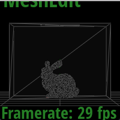
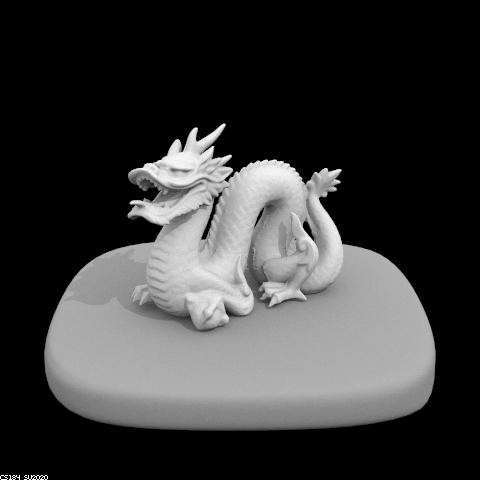

In this part, we will start simulating light transport in the scene, and render images with realistic shading.
The main function that gets called in the rendering loop is est_radiance_global_illumination in src/pathtracer/pathtracer.cpp. In the starter code, this function returns a debug color where RGB is simply set to the normal vector of the surface. We'll be modifying this function as we work through the next few tasks.
For each task, you should read the "Additional code that will be useful" and "Notes" sections, which contain helpful or necessary implementation information beyond the theoretical descriptions.
Task 1: Diffuse BSDF
Introducing the BSDF
The material properties of the surfaces we render are encoded in the BSDF class. BSDF stands for Bidirectional Scattering Distribution Function, which is a generalization of the BRDF to represent materials that can both reflect and transmit light. BSDF objects represent the ratio of incoming light scattered from incident direction to outgoing direction. There are different subclasses for different types of materials.
For Assignment 6, we will primarily be dealing with DiffuseBSDFs (and to a lesser extent, EmissiveBSDFs).
We also define a handful of mathematical helper functions in src/pathtracer/bsdf.h for dealing with vectors representing directions in the unit hemisphere.
Your task
In this task, you will implement the function DiffuseBSDF::f to represent a diffuse material that reflects incoming light equally in all directions on the hemisphere. Reference the relevant lecture slides.
DiffuseBSDF::f takes as input the incoming solid angle wi and the outgoing solid angle wo and returns f(wi -> wo).
Notes:
- The albedo of the material is stored in its
reflectanceparameter. This is a Vector3D in order to describe the reflectance for R, G, and B channels simultaneously. - The
Vector3D DiffuseBSDF::ffunction takes thewoandwivectors, and returns an refletance. Depending on the type of BSDF, you may not need these two vectors. - The
Vector3D DiffuseBSDF::sample_ffunction needs to set a value towi.wiis passed in as a pointer so you can set its value. - This section only requires a couple lines of code.
Nothing new to render yet -- we'll use this in task 3 and 4!
Task 2: Zero-bounce Illumination
Zero-bounce illumination refers to light that reaches the camera without bouncing off anything in the scene. In other words, it is only the light that comes from the light source itself.
Implement the function zero_bounce_radiance, which takes as input a Ray and the Intersection object corresponding with that ray and the scene.
The function should return the emission of the object that was intersected.
Once you're done, update est_radiance_global_illumination to return the zero-bounce radiance (instead of normal shading).
Code that will be useful to you:
- BSDFs have a
get_emission()function that return the emissive spectrum of the object. - Review the different fields of
Intersection.
If you find these function names confusing, we have introduced the code pipeline in the main page of the specs ("Basic Code Pipeline")
Now, when you render a scene, you should see the area light at the top of the Cornell Box.
./pathtracer -t 8 -s 16 -l 8 -m 6 -H -f CBbunny_16_8.png -r 480 360 ../dae/sky/CBbunny.dae
Task 3: Direct Lighting with Uniform Hemisphere Sampling
Now that you have one material at your disposal, we can implement direct lighting estimations! There are two methods for this. The first is estimate_direct_lighting_hemisphere, where we estimate the direct lighting on a point by sampling uniformly in a hemisphere. We will focus on this function for this task. The second is estimate_direct_lighting_importance, which you will implement in Task 4.
Note that we are tracing inverse rays. We first cast a ray from the camera, through a specific pixel, and into the scene. Once it intersects something in the scene, we need to determine the color of our corresponding pixel. We do this by calculating how much light is reflected back towards the camera at this intersection point. To do this, we first need to estimate how much light arrived at that intersection point from elsewhere.

In order to estimate how much light arrived at the intersection point, lets recall the rendering equation from lecture. We need to integrate over all the light arriving in a hemisphere around the point of interest (hit_p in the code). This comes from the definition of irradiance.
As shown in the slide, we approximate this integral using a Monte Carlo estimator:
\
In our code, is repesented by hit_p, and is represented by w_out. For this task, we will uniformly sample incoming ray directions in the hemisphere. Right now, we are only worried about direct illumination, so we want to check if a new ray going from the hit_p in the sampled direction intersects a light source. (Otherwise, we do not care about this sampled direction -- it doesn't add any direct light to the point of interest).
Then, once we have an estimate of incoming light, we can use the reflection equation to calculate how much outgoing light there is.
Finally, update the wrapper function one_bounce_radiance to call your direct lighting function, and update est_radiance_global_illumination to add one_bounce_radiance to your output.
Implementation details
The starter code gives you:
o2wandw2o, matrices for object-to-world space and world-to-object space transformations, respectively.- These were created using the input
isect's normal to calculate a local coordinate space for the object hit point. In this local space, the normal is , so that is "up". - Note that these are each the transpose and inverse of the other (they're orthonormal!)
- These were created using the input
hit_p, the hit point of the ray, for convenience (note which coordinate space this is in).w_out, the outgoing direction in the local object frame.num_samples, which you should use as the number of directions in the hemisphere you should sample.EPS_F, an epsilon constant that can be used to avoid numerical precision issues.
Additional code that will be useful:
UniformHemisphereSampler3D::get_sample()- the PathTracer class contains a
hemisphereSampler - returns a object-space vector, unfirormly randomly sampled on the hemisphere
- the PathTracer class contains a
BVHAccel::intersect(Ray& r, Intersection* i)BSDF::get_emission()BSDF::f(Vector3D& wo, Vector3D& wi)Pathtracer::one_bounce_radiance(Ray& r, Intersection& i)
Notes:
- Recall that the cosine of the angle between two unit vectors is equal to their dot product.
- Be aware of which vectors are in world space or in object space. For example, the BSDF is a property of an object -- so which coordinate space should we use with it? Which coordinate space should we use when intersecting rays?
- When casting new rays from existing hit points, you should set the ray's
min_tfield to a small constant,EPS_F.- This alleviates numerical precision issues that cause the ray to intersect the surface it started from. (i.e., by setting the
min_tfield, we won't consider intersections with a surface at the ray's origin a valid intersection).
- This alleviates numerical precision issues that cause the ray to intersect the surface it started from. (i.e., by setting the
- Don't forget that we are estimating the lighting, and need to normalize by the number of samples and by the probability of taking each sample.
- Don't forget all the multiplicative factors that are part of the reflection equation.
To test your results, updateest_radiance_global_illumination() to return estimate_direct_lighting_hemisphere(). Now, you should be able to render any CB scenes with lambertian diffuse BSDFs, like CBspheres and CBbunny.
Fast renders for testing
We're reaching the point in the assignment where high and even medium-quality renders can take a long time to complete. For that reason, we want to reiterate again several methods to speed up render times, particularly when iterating on your code/bug fixing.
Reduce number of samples, bounces, etc.
There are three main parameters that have a large effect on rendering time: the number of samples per pixel (-s parameter), samples per light (-l parameter), and bounces per primary ray (-m parameter). When testing your code, you should initially use the smallest appropriate number of samples. For example, when testing if you can randomly sample pixels correctly, you may want to use more than 1 sample, but you certainly don't need to use 256 while testing. Note: use the correct number of samples specified in the writeup directions when generating your final results!
Render a zoomed out view of the scene
./pathtracer -t 8 -s 64 -l 32 -H -f CBbunny_H_64_32.png -r 100 100 ../dae/sky/CBbunny.dae
Here, we set the resolution of our window to be 100 pixels by 100 pixels -- super small! We can then use the camera controls and scroll to zoom out. This gives us a preview like the image on the left, and renders out like the image on the right. This took approximately 15 seconds, compared to the 50+ seconds to render the 480x360 resolution image
You can also zoom out without decreasing the overall size of the window for the same speedup!
| Small, zoomed out | After rendering |
|---|---|
|  |
Use cell rendering functionality
After you hit R to start a render, you can then hit C to enter cell rendering mode. This allows you to then click and drag a rectangle to render. This is helpful to spot check areas of your scene without having to wait for the whole thing to render. In particular, the render will always render from the bottom up, which means you might wait a long time waiting for only the floor to render -- not very interesting or useful!
Here's an example of cell rendering a few different spots of the scene, which conveys a lot of information about the render while only taking about 20 seconds for all cells put together!
The original command used was the following, though remember you will need to start a render with R then enter cell rendering mode with C.
./pathtracer -t 8 -s 64 -l 32 -H -f CBbunny_H_64_32.png -r 480 360 ../dae/sky/CBbunny.dae
Full-sized results
At this point, here is the result of the command:
./pathtracer -t 8 -s 16 -l 8 -H -f CBbunny_H_16_8.png -r 480 360 ../dae/sky/CBbunny.dae
And the command below took 52 seconds with the reference solution on a Hive machine.
./pathtracer -t 8 -s 64 -l 32 -m 6 -H -f CBbunny_H_64_32.png -r 480 360 ../dae/sky/CBbunny.dae
Now you should be able to render nice direct lighting effects such as area light shadows and ambient occlusion, albeit without full global illumination.
One limitation of the current renderer is that you will only be able to render files with Lambertian diffuse BSDFs, as we have not yet implemented any of the other BSDFs (You will implement these in assignment 7!). There's also another problem -- we can't render any scenes with point light sources, since our outgoing rays will essentially never intersect with them! (We're sampling directions in a hemisphere -- what's the probability of hitting a single point?)
Let's fix that!
Task 4: Direct Lighting by Importance Sampling Lights
Our results from uniform hemisphere sampling are quite noisy! While they will converge to the correct result, we can do better. We also want to be able to render images that only have point lights.
Fill in estimate_direct_lighting_importance, which has the same goal as estimate_direct_lighting_hemisphere, but will sample all the lights directly, rather than uniform directions in a hemisphere.
For each light in the scene, we want to sample directions between the light source and the hit_p. If we cast a ray in this direction and there is no other object between the hit point and the light source, then we know that this light source does cast light onto the hit point.
From this point, it's only a matter of using the reflectance equation as in Task 3 to calculate the total amount of outgoing light.
Finally, update the wrapper function one_bounce_radiance to calculate direct lighting via hemisphere sampling or importance sampling based on the value of direct_hemisphere_sample.
Additional code that will be useful:
scene->lightsis a vector storing pointers of all the lights in the sceneSceneLight::is_delta_light()returnstrueif the light is a point light source- You can (and should) save time by sampling a point light source only once (since all samples from a point light will be the same, anyway!)
SceneLight::sample_L(Vector3D& p, Vector3D* wi, double* distToLight, double* pdf), which samples the light and:- returns the emitted radiance as a
Vector3D - writes a world-space, unit
wivector giving the sampled direction betweenpand the light source - writes a
distToLightdouble giving the distance betweenpand the light source in thewidirection - writes a
pdfdouble giving the value of the probability density function evaluated at thewidirection
- returns the emitted radiance as a
BVHAccel::intersect(Ray& r, Intersection* i)BSDF::f(Vector3D& wo, Vector3D& wi)EPS_F, an epsilon constant for numerical precision issues.
Notes:
- C++ supports range-based for loops for operating over, for example, vectors of pointers. (For your convenience.)
- It may be helpful to think about casting a ray between the hit point and the light as casting a "shadow" ray. If this ray intersects the scene, then the hit point is in a shadow with respect to the current light source.
- When creating this ray, use the
max_tfield anddistToLightvalue, since we care about intersections before the light. - As in Task 2, don't forget to use the
EPS_Foffset formin_twhen creating rays originating from existing intersections. This time, you should also subtract it fromdistToLightto similarly avoid intersecting with the light itself (we care about things blocking the light).
- When creating this ray, use the
- Similarly, don't bother casting this ray if you know the light is behind the surface at the hit point. (How can you check for this?)
- As in Task 2:
- Don't forget the multiplicative and normalization factors when returning outgoing light!
To test your results, updateest_radiance_global_illumination() to return estimate_direct_lighting_importance(). Now we can render images with less noise, as well as scenes lit by point lights!
You can first check your implementation by using a low sample rate:
./pathtracer -t 8 -s 1 -l 1 -m 1 -f bunny_1_1.png -r 480 360 ../dae/sky/CBbunny.dae
At this point, here is the result of the following command, which took 39 seconds with the reference solution on a Hive machine.
./pathtracer -t 8 -s 64 -l 32 -m 6 -f bunny_64_32.png -r 480 360 ../dae/sky/CBbunny.dae
And the command below took 34 seconds with the reference solution on a Hive machine.
./pathtracer -t 8 -s 64 -l 32 -m 6 -f dragon_64_32.png -r 480 480 ../dae/sky/dragon.dae

Much better! Remember that you will be running experiments to compare these two methods for the write-up.